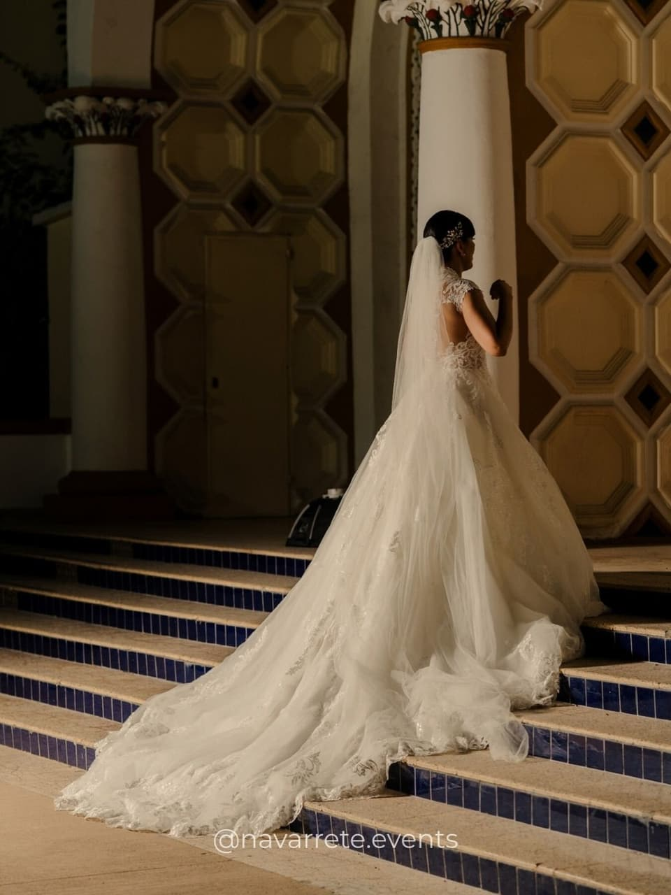
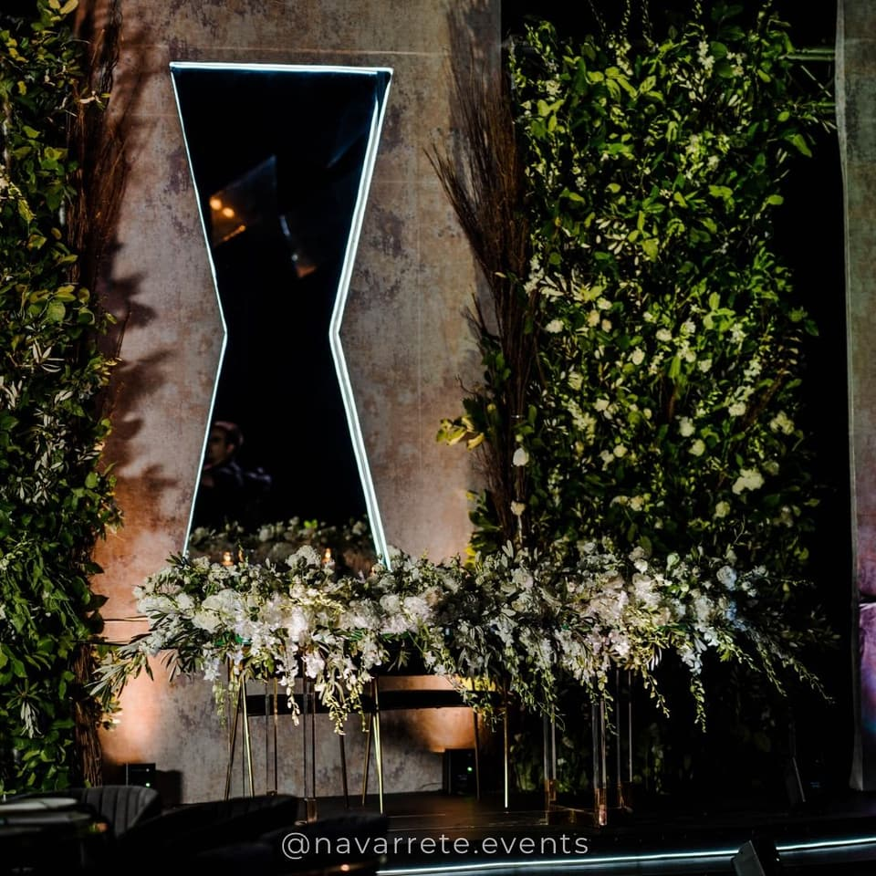
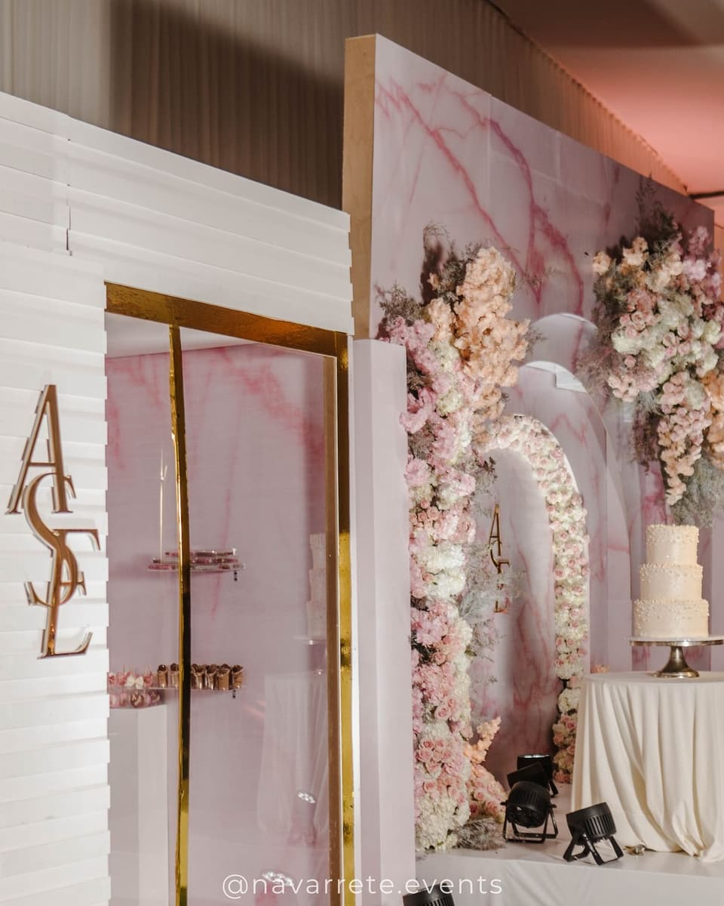
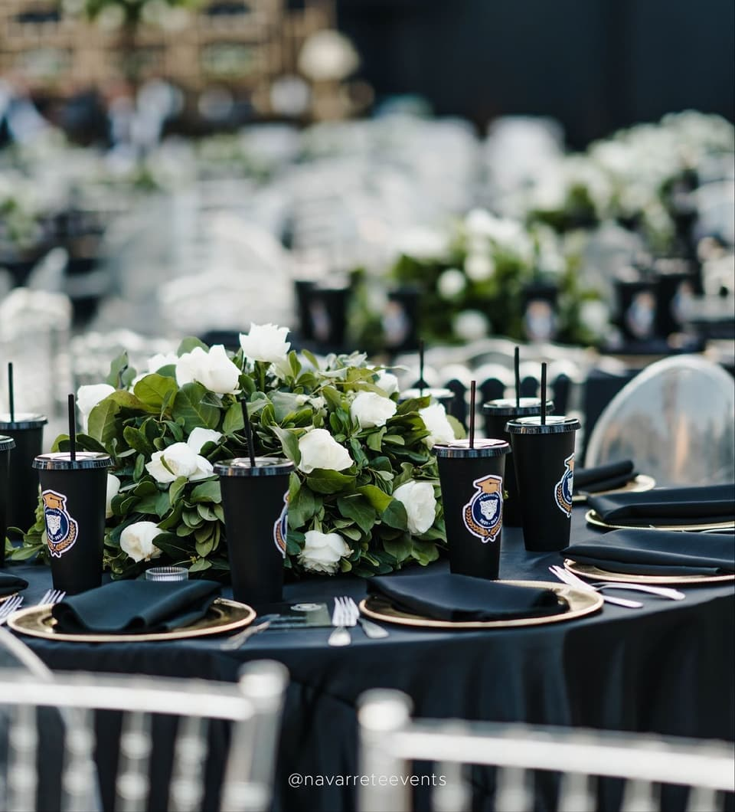
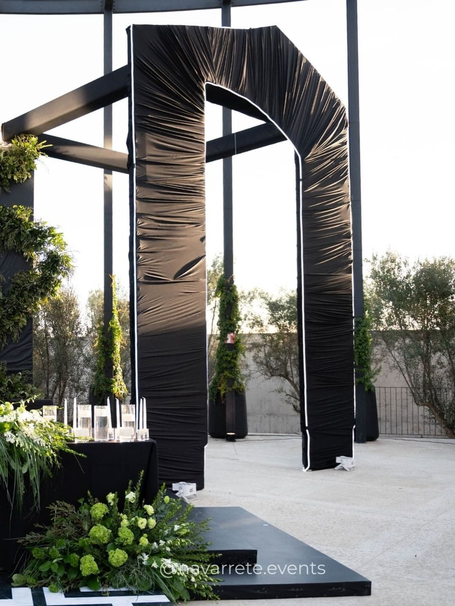
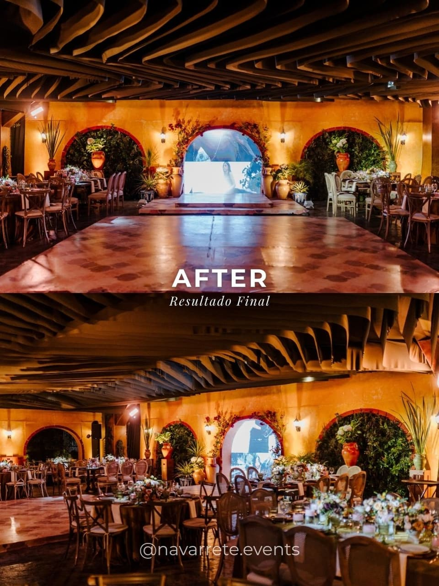
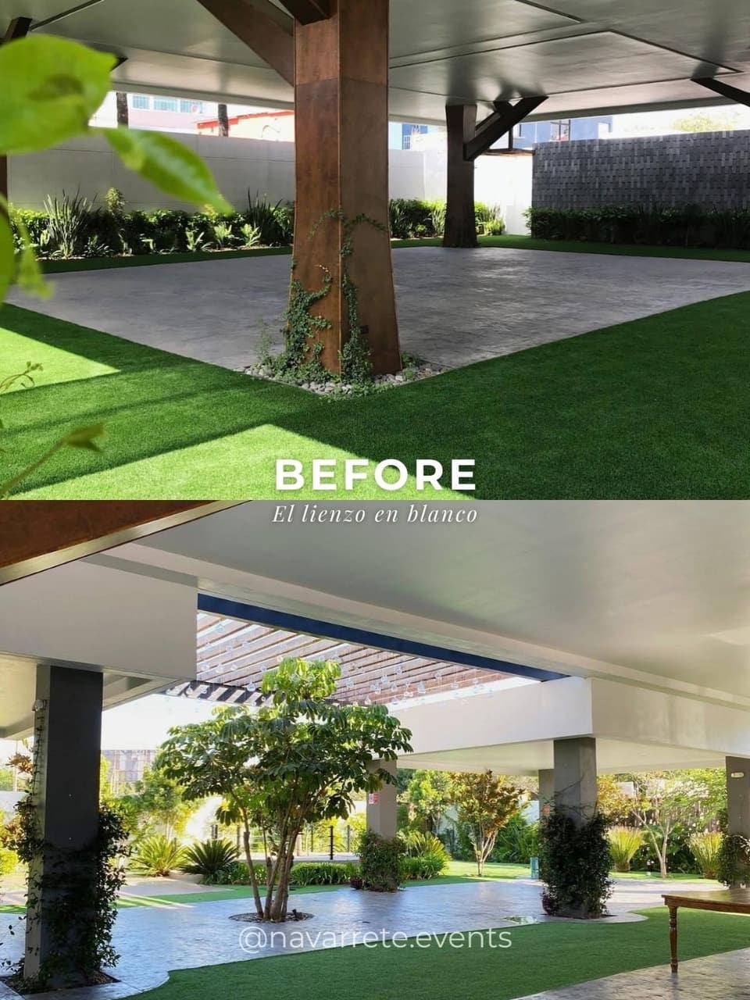

La experiencia
Del primer encuentro a la última luz de la noche
Planear una celebración importante no debería sentirse como una lista de pendientes. Nuestro proceso está pensado para que cada decisión tenga sentido, cada proveedor tenga un rumbo claro y ustedes puedan disfrutar el camino.
El proceso
-

1. La primera conversación
Escuchamos antes de proponer. Hablamos de la fecha, el lugar, los invitados y la inversión, pero sobre todo de ustedes: qué les emociona, qué quieren que se sienta y qué no quieren repetir.
-

2. Visión y dirección creativa
Traducimos esa conversación en un concepto: paleta, materiales, luz, flores y atmósfera. Una propuesta visual completa que sirve como brújula para todo lo que viene.
-

3. Planeación y curaduría
Presupuesto, calendario y proveedores. Seleccionamos y coordinamos a cada aliado para que todos trabajen hacia la misma idea, con tiempos y responsabilidades claras.
-

4. Desarrollo de diseño y coordinación
Planos de distribución, montajes de prueba, muestras de mesa y detalles de papelería. Lo que en el concepto era una intención aquí se vuelve medida, material y logística.
-

5. Producción y montaje
El día del evento, nuestro equipo dirige el montaje completo: estructura, iluminación, flores y mesa. Cada elemento llega a su lugar con orden y sin sorpresas.
-

6. La celebración
Coordinamos los tiempos, a los proveedores y cada imprevisto, en silencio. Ustedes solo tienen que estar presentes y vivir lo que imaginaron.

Detrás del diseño
Lo que ocurre antes de que lleguen los invitados
Horas de montaje, flores colocadas una a una, pruebas de luz. Este fragmento muestra la construcción de una boda, del armado de la estructura a la entrada de los novios.
Transformación
El lienzo en blanco y el resultado final
Un mismo espacio, antes y después del diseño. Desliza para comparar.


Lo que pueden esperar
-
Precisión
Cada decisión documentada, cada proveedor con instrucciones claras.
-
Confianza
Un solo equipo responsable de que todo suceda como se acordó.
-
Discreción
Su celebración, sus invitados y su información se tratan con reserva.
-
Calma
Para que el día del evento lo vivan como invitados de honor, no como organizadores.
Hablemos de su celebración
Cuéntennos lo que imaginan y les compartiremos cómo podríamos acompañarlos.
Iniciar proyecto